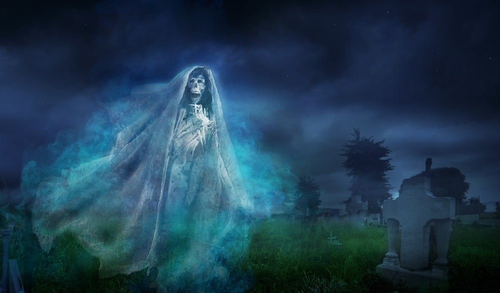

La Llorona es un espectro del folclore hispanoamericano originario de México que, según la tradición oral, es el alma en pena de una mujer que ahogó a sus hijos, que luego, arrepentida y maldecida, los busca por las noches por ríos, pueblos y ciudades, asustando con su sobrecogedor llanto a quienes la ven u oyen en la noche. Su leyenda posee gran diversidad de versiones, con generalidades y particularismos propios de muchas regiones geográficas. A pesar de ello, su relato mágico y sobrenatural, emergido de múltiples orígenes, es constante y reconocible, con añadidos, texturizaciones e hibridaciones de muy diversos manejos.
La leyenda de la Llorona es antigua, tiene orígenes prehispánicos mexicas y mayas, en la forma de diversos personajes con características similares, presentes en las cosmogonías y creencias ancestrales de los pueblos autóctonos de América, transmitidos de forma oral de generación en generación, hallándose relatos comunes pero con diversas imágenes, emblemas y símbolos, lo que le da a la leyenda una rica diversidad cultural. Durante la época Colonial, las generalidades de la leyenda tomaron forma, y a través del tiempo, la leyenda de la Llorona se ha convertido en parte del imaginario colectivo de Hispanoamérica, trascendiendo fronteras y volviéndose parte de la identidad cultural, el folclor y la imaginería popular de muchos países. En la actualidad, la leyenda continúa siendo muy popular desde su origen en México hasta Argentina, así como en los estados del sur de los Estados Unidos con mayor población de habla hispana, como Arizona, Texas y Nuevo México. En el caso particular de México, el personaje de la Llorona es signo de identidad nacional y Patrimonio Cultural Intangible de la Ciudad de México.
La leyenda de la Llorona gira entorno al espectro de una mujer que vaga por distintos lugares, cerca de ríos, lagos, pueblos y ciudades, lamentándose por el crimen que ha cometido: asesinar a sus hijos.

Este espectro forma parte de la identidad cultural de Hispanoamérica. La leyenda de la Llorona ha logrado traspasar la barrera del tiempo y el espacio, surgiendo de ella diferentes versiones según el lugar geográfico.
No existe una única versión de esta leyenda, incluso en un mismo país pueden conocerse varias según el lugar. Esta es la adaptación de una versión corta de la leyenda extendida en México, la cual está ambientada en la capital del país:
Cuenta la leyenda que, a mediados del siglo XVI, durante las noches de luna llena, los vecinos de Ciudad de México se despertaban sobresaltados al escuchar los fuertes lamentos de una mujer, la cual gritaba: ¡Ay mis hijos!
La figura iba vestida de blanco y un velo cubría su rostro, mientras recorría las calles de la ciudad dirigiéndose hasta las orillas de un río, donde se desvanecía.
Dicen que la mujer, tras el abandono de su marido, decidió ahogar a sus hijos en el río. Desde entonces, lamenta lo sucedido arrepentida y vaga por las calles de la ciudad. Hay quien afirma que a día de hoy se puede oír su triste lamento.
Simbología en la Llorona
Hay elementos que están presentes en prácticamente todas las versiones de la leyenda, los cuales pueden ser interesantes para comprender qué hay detrás de esta narración. También sirven como nexo entre unas y otras.
El agua
Es curioso como en la leyenda el agua es uno de los elementos que está presente en casi todos los casos: ríos, lagos, lagunas...
La presencia del agua significa fuente de vida, también en ciertas ocasiones, como en este caso, también puede simbolizar la muerte.
Vestimenta blanca
Normalmente se describe a la Llorona como el espectro de una mujer vestida de blanco. También cubre su rostro con un velo.
Llama la atención que el blanco es en muchas ocasiones el color que representa a las deidades.
Este color contrasta con la oscuridad de la noche, asimismo se relaciona de forma estereotipada con el color de fantasmas y espíritus.
Los gritos
De una forma literal, el lamento de la Llorona se justifica por la pérdida de sus hijos, al cometer ella misma el crimen. Uno de los gritos más conocidos es el de: ¡Ay mis hijos!
Tal y como apuntan en su investigación Alberto y Aitana Martos García, los gritos de la llorona se han llegado a interpretar de una forma “derrotista”. Es decir, en el plano denotativo, se ha entendido como un lamento del pueblo americano por la calamidad sufrida durante la conquista.
Por otro lado, el grito de la llorona va más allá del lamento por sus hijos. Si se escucha este espectro es señal de mala suerte, lo que ocurre después de percibir su lamento es una sucesión de desgracias. En este sentido, el grito de la llorona podría funcionar como señal de mal augurio.
Historia de la Llorona
El origen de la leyenda de la Llorona es incierto. La primera vez que aparece registrada de forma escrita es durante el siglo XVI a cargo de Fray Bernardino de Sahagún.
Algunos estudios apuntan afinidades con otros espectros procedentes de la cultura prehispánica. Otros, a que las distintas versiones que se conocen hoy día de la leyenda datan de la Época colonial. Veamos.
Prehispánico: Tenpecutli, Chocachualt y el sexto presagio.
Aunque no existen certezas de que este sea el verdadero origen de la leyenda de la Llorona, estudios apuntan a similitudes con otras divinidades de origen prehispánico.
Por ejemplo, en lugares como Xochimilco (México), donde la leyenda sigue muy presente, la Llorona parece estar claramente vinculada a la diosa Tenpecutli. Esta deidad, al igual que la Llorona, también está vinculada al filicidio de sus hijos en el río.
Existen otros datos que conectan la figura de la Llorona con el período prehispánico y a deidades como la mexica Cihuacóatl, mitad mujer mitad serpiente, la cual se asociaba a la fertilidad y los partos. Asimismo, Cihuacóatl está directamente vinculada al amparo de las mujeres que fallecían durante el parto.
Los primeros textos que reflejan esta similitud de esta diosa con la Llorona datan del siglo XVI. Fray Bernardino de Sahagún se refirió en su obra Historia de las cosas de Nueva España (Tomo 1, cap VI) a la leyenda de Cihuacóatl, donde trata las diosas principales que se adoraban.
Sahagún describe a Cihuacóatl de la siguiente manera:
"Decían que esta diosa daba cosas adversas como pobreza, abatimiento, trabajos; aparecía muchas veces, según dicen, como una señora compuesta con unos atavíos como se usan en palacio. Decían que por la noche voceaba y brameaba en el aire".
Además de las similitudes de un espectro con vestimenta elegante y que aparece gritando, Bernardino de Sahagún describe que
“los atavíos con que esta mujer aparecía eran blancos”. También se puede ver cierta relación con algunas versiones actuales de la Llorona, vestida de blanco. Asimismo, indica que este espectro desaparecía.
De Sahagún también refleja ocho presagios interpretados por los aztecas que tuvieron lugar años antes de la conquista de los españoles, el sexto dice así: “se oyeron voces muchas veces, como de una Mujer que angustiaba y con lloro decía:
"oh hijos míos qué va llegado vuestra destrucción" . Y otras veces decía:
"hijos míos, ¿dónde os llevaré, porque no os acabéis de perder?". Esta mujer se asocia a la diosa Cihuacóatl.